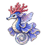

No.053
ルリヒメ
潮 通常
硝子の巻き尾で珊瑚に挨拶する。歌声は干潮の洞窟に響く。
基本データ
| 図鑑番号 | No.053 |
|---|---|
| タイプ | 潮タイプ |
| 進化 | 進化しない |
| 入手方法 | 帆風の港（Lv.7〜11）、暁帆島（Lv.41〜45）の草むらに出現。 |
Lv.50の能力値
| HP | 289 | |
|---|---|---|
| 攻撃 | 179 | |
| 防御 | 124 | |
| 特攻 | 180 | |
| 特防 | 126 | |
| 素早さ | 119 | |
| 命中 | 103 | |
| 回避 | 99 |
冒険中の能力値はレベルに応じて上がります。オンライン対戦の通常レンタルはLv.50で統一されます。
覚える技
| 技 | タイプ | 分類 | 威力 | 命中 | PP | 効果 |
|---|---|---|---|---|---|---|
| 深海の呼び声 | 潮 | 特殊 | 43 | 89 | 10 | 深い潮の圧力をまとわせる。 |
| 月虹の糸 | 晶 | 物理 | 28 | 96 | 20 | 与えたダメージの25%を吸収する。 |
| 清泉の祈り | 潮 | 回復 | — | — | 10 | 最大体力の35%を回復。 PPを1消費する。 |
| 波紋のくちづけ | 潮 | 物理 | 26 | 97 | 30 | 与えたダメージの25%を吸収する。 |
タイプ相性
潮タイプの技は灯タイプに強く（1.5倍）、芽タイプの技を受けると効果が大きくなります。同じタイプの技を使うと威力が1.15倍になります。